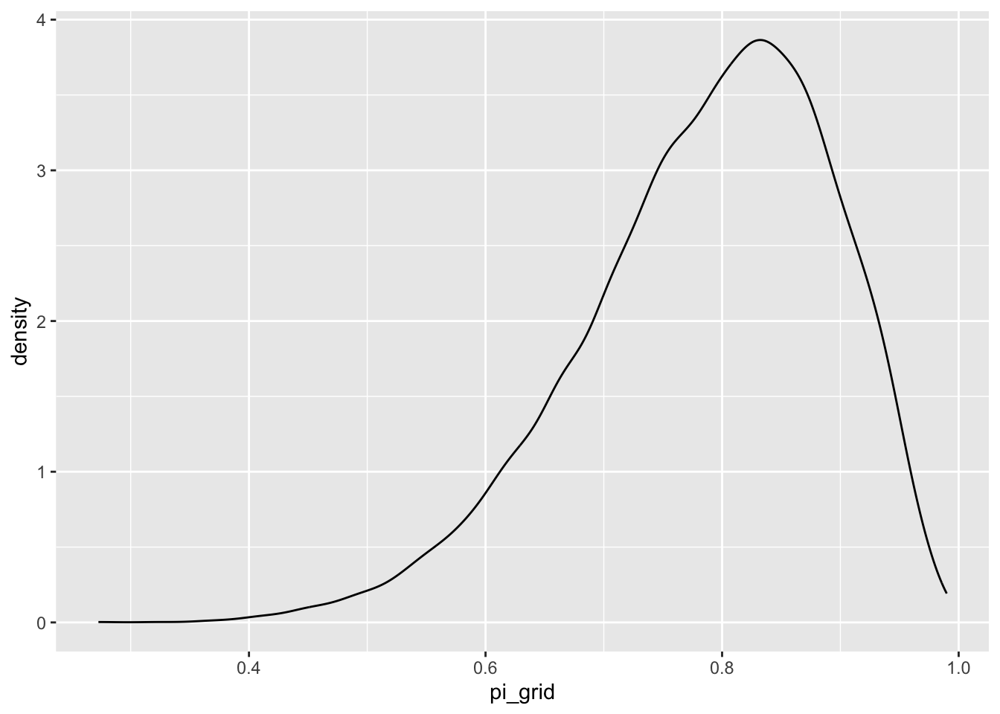

library(tidyverse)
library(stats2data)
library(rstan)
library(janitor)
library(bayesplot)
library(bayesrules)In addition to usual packages, tidyverse (Wickham et al. (2019)), stats2data (Sadigov (2022)), janitor (Firke (2021)), bayesrules (Dogucu, Johnson, and Ott (2021)) and bayesplot (Gabry and Mahr (2022)), we also use rstan (2022) in this chapter.
1 Libraries
2 Grid Approximation
Take beta prior
\[ \pi \sim Beta(2,2) \]
and binomial data model
\[ Y|\pi \sim Binomial(10, \pi) \]
Observe evidence/data of 9 successes out of 10 trials. Then we know the posterior will
\[ \pi \sim Beta(2+9,2+1) = Beta(11, 3) \]
Now we approximate this posterior using the following steps.
Define a discrete grid of possible values.
Evaluate the prior pdf and likelihood function at each grid value.
Obtain a discrete approximation of the posterior pdf by:
calculating the product of prior and likelihood at each grid value;
normalizing the products so that they sum to 1 across all grid values
Randomly sample grid values with respect to their corresponding normalized posterior probabilities.
First we do this for only few possible points:
\[ \pi \in \{0, 0.2, 0.4, 0.8, 1 \} \]
grid_data <-
tibble(pi_grid = seq(from = 0, to = 1, length = 6)) %>% #step1
mutate(prior = dbeta(pi_grid, 2, 2),
likelihood = dbinom(9, 10, pi_grid)) %>% #step2
mutate(unnormalized = likelihood * prior,
posterior = unnormalized / sum(unnormalized)) #step3
grid_data %>%
round(2)# A tibble: 6 × 5
pi_grid prior likelihood unnormalized posterior
<dbl> <dbl> <dbl> <dbl> <dbl>
1 0 0 0 0 0
2 0.2 0.96 0 0 0
3 0.4 1.44 0 0 0.01
4 0.6 1.44 0.04 0.06 0.18
5 0.8 0.96 0.27 0.26 0.81
6 1 0 0 0 0 grid_data %>%
ggplot(aes(x = pi_grid)) +
geom_point(aes(y = prior, size = 2), color = 'red') +
geom_segment(aes(x = pi_grid, xend = pi_grid, y = 0, yend = prior)) +
geom_point(aes(y = posterior, size = 2), color='darkgreen') +
geom_segment(aes(x = pi_grid, xend = pi_grid, y = 0, yend = posterior)) 
# step4: sample from the discretized posterior
set.seed(84735)
post_sample <-
grid_data %>%
select(pi_grid, posterior) %>%
sample_n(size = 10000,
weight = posterior,
replace = TRUE) %>%
select(pi_grid)
post_sample# A tibble: 10,000 × 1
pi_grid
<dbl>
1 0.8
2 0.8
3 0.8
4 0.6
5 0.8
6 0.8
7 0.8
8 0.8
9 0.8
10 0.8
# … with 9,990 more rowspost_sample %>%
count(pi_grid) %>%
mutate(perc = n/sum(n))# A tibble: 3 × 3
pi_grid n perc
<dbl> <int> <dbl>
1 0.4 69 0.0069
2 0.6 1885 0.188
3 0.8 8046 0.805 grid_data %>%
round(2)# A tibble: 6 × 5
pi_grid prior likelihood unnormalized posterior
<dbl> <dbl> <dbl> <dbl> <dbl>
1 0 0 0 0 0
2 0.2 0.96 0 0 0
3 0.4 1.44 0 0 0.01
4 0.6 1.44 0.04 0.06 0.18
5 0.8 0.96 0.27 0.26 0.81
6 1 0 0 0 0 # Histogram of the grid simulation with posterior pdf
post_sample %>%
ggplot(aes(x = pi_grid)) +
geom_histogram(aes(y = ..density..), color = "white", fill = "darkgreen") +
geom_density(linewidth = 1, color = 'red') +
stat_function(fun = dbeta, args = list(11, 3), color = 'blue', linewidth = 1) +
lims(x = c(0, 1))Lets do it again for 100 values.
grid_data <-
tibble(pi_grid = seq(from = 0, to = 1, length = 100)) %>% #step1
mutate(prior = dbeta(pi_grid, 2, 2),
likelihood = dbinom(9, 10, pi_grid)) %>% #step2
mutate(unnormalized = likelihood * prior,
posterior = unnormalized / sum(unnormalized)) #step3
grid_data %>%
round(2)# A tibble: 100 × 5
pi_grid prior likelihood unnormalized posterior
<dbl> <dbl> <dbl> <dbl> <dbl>
1 0 0 0 0 0
2 0.01 0.06 0 0 0
3 0.02 0.12 0 0 0
4 0.03 0.18 0 0 0
5 0.04 0.23 0 0 0
6 0.05 0.29 0 0 0
7 0.06 0.34 0 0 0
8 0.07 0.39 0 0 0
9 0.08 0.45 0 0 0
10 0.09 0.5 0 0 0
# … with 90 more rowsgrid_data %>%
ggplot(aes(x = pi_grid)) +
geom_point(aes(y = prior), color = 'red') +
geom_segment(aes(x = pi_grid, xend = pi_grid, y = 0, yend = prior)) +
geom_point(aes(y = posterior), color='darkgreen') +
geom_segment(aes(x = pi_grid, xend = pi_grid, y = 0, yend = posterior)) 
# step4: sample from the discretized posterior
set.seed(84735)
post_sample <-
grid_data %>%
select(pi_grid, posterior) %>%
sample_n(size = 10000,
weight = posterior,
replace = TRUE) %>%
select(pi_grid)
post_sample %>%
ggplot(aes(pi_grid)) +
geom_density()
# Histogram of the grid simulation with posterior pdf
post_sample %>%
ggplot(aes(x = pi_grid)) +
geom_histogram(aes(y = ..density..), color = "white", fill = "darkgreen") +
geom_density(linewidth = 1, color = 'red') +
stat_function(fun = dbeta, args = list(11, 3), color = 'blue', linewidth = 1) +
lims(x = c(0, 1))
3 Gamma-Poisson example
Take Gamma prior
\[ \lambda \sim Gamma(3,1) \]
and Poisson data model
\[ Y|\lambda \sim Poisson(\lambda) \]
Observe evidence/data of \(Y_1 = 2, Y_2 = 8\). Then we know the posterior will
\[ \lambda | \{Y_1, Y_2\} \sim Gamma(3 + Y_1 + Y_2, 1 + 2) = Gamma(13, 3) \]
grid_data <-
tibble(lambda_grid = seq(from = 0, to = 15, length = 100)) %>% #step1
mutate(prior = dgamma(lambda_grid, 3, 1),
likelihood = dpois(2, lambda_grid)*dpois(2, lambda_grid)) %>% #step2
mutate(unnormalized = likelihood * prior,
posterior = unnormalized / sum(unnormalized)) #step3
grid_data %>%
round(2)# A tibble: 100 × 5
lambda_grid prior likelihood unnormalized posterior
<dbl> <dbl> <dbl> <dbl> <dbl>
1 0 0 0 0 0
2 0.15 0.01 0 0 0
3 0.3 0.03 0 0 0
4 0.45 0.07 0 0 0
5 0.61 0.1 0.01 0 0
6 0.76 0.13 0.02 0 0.01
7 0.91 0.17 0.03 0 0.02
8 1.06 0.19 0.04 0.01 0.03
9 1.21 0.22 0.05 0.01 0.04
10 1.36 0.24 0.06 0.01 0.05
# … with 90 more rowsgrid_data %>%
ggplot(aes(x = lambda_grid)) +
geom_point(aes(y = prior), color = 'red') +
geom_segment(aes(x = lambda_grid, xend = lambda_grid, y = 0, yend = prior)) +
geom_point(aes(y = posterior), color='darkgreen') +
geom_segment(aes(x = lambda_grid, xend = lambda_grid, y = 0, yend = posterior)) 
# step4: sample from the discretized posterior
set.seed(84735)
post_sample <-
grid_data %>%
select(lambda_grid, posterior) %>%
sample_n(size = 10000,
weight = posterior,
replace = TRUE) %>%
select(lambda_grid)
post_sample %>%
ggplot(aes(lambda_grid)) +
geom_density()
# Histogram of the grid simulation with posterior pdf
post_sample %>%
ggplot(aes(x = lambda_grid)) +
geom_histogram(aes(y = ..density..), color = "white", fill = "darkgreen") +
geom_density(linewidth = 1, color = 'red') +
stat_function(fun = dgamma, args = list(13, 3), color = 'blue', linewidth = 1) +
lims(x = c(0, 15))
References
Dogucu, Mine, Alicia Johnson, and Miles Ott. 2021. “Bayesrules: Datasets and Supplemental Functions from Bayes Rules! Book.” https://github.com/bayes-rules/bayesrules.
Firke, Sam. 2021. “Janitor: Simple Tools for Examining and Cleaning Dirty Data.” https://CRAN.R-project.org/package=janitor.
Gabry, Jonah, and Tristan Mahr. 2022. “Bayesplot: Plotting for Bayesian Models.” https://mc-stan.org/bayesplot/.
Sadigov, Tural. 2022. “Stats2data: Data Package for MATH 254, Statistical Modeling and Applications, at Hamilton College.” https://github.com/turalsadigov/stats2data.
Stan Development Team. 2022. “RStan: The r Interface to Stan.” https://mc-stan.org/.
Wickham, Hadley, Mara Averick, Jennifer Bryan, Winston Chang, Lucy D’Agostino McGowan, Romain François, Garrett Grolemund, et al. 2019. “Welcome to the Tidyverse” 4: 1686. https://doi.org/10.21105/joss.01686.